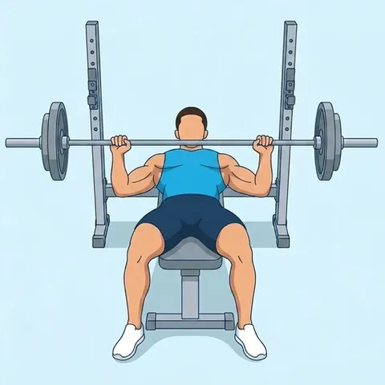
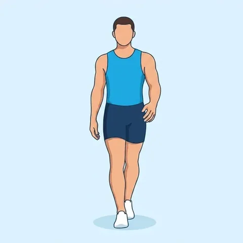

Courez.
Soulevez.
Progressez.
Tempo calcule vos allures, vous aide à construire vos séances de musculation et compte vos calories. Gratuit, sans publicité, et ça marche même sans réseau.
Pas besoin de compte pour commencer. Créez-en un pour retrouver vos carnets sur tous vos appareils.

Content de vous revoir
Que voulez-vous faire aujourd'hui ?
Choisissez votre couloir. Chaque outil répond à une question simple.
Course à pied
Trouver la bonne allure, suivre un plan jusqu'au jour J, garder la trace de chaque sortie.
Musculation
Du premier jour en salle aux charges lourdes : programmes prêts selon votre niveau, 172 exercices illustrés et expliqués, et la charge à viser à chaque séance.

Autres sports et santé
Rugby, natation, vélo… : tous vos sports réunis pour doser la charge, et ce que vous mangez face à ce que vous dépensez.

Comment ça marche
- Renseignez votre profilSexe, âge, taille et poids, une seule fois. Les calories, les zones et les carnets s'adaptent à vous.Remplir mon profil
- Notez ce que vous faitesUne sortie de course ou une séance de muscu, en quelques touches, même au fond de la salle sans réseau.Ouvrir le carnet de séances
- Regardez vos progrèsRecords, courbes, kilomètres par semaine et calories dépensées en sport, calculés pour vous.Voir mes calories en sport
Gardez Tempo dans votre poche
- Gratuit, sans publicitéAucune inscription obligatoire.
- Sans réseauLes pages et vos carnets restent disponibles hors connexion.
- Sur tous vos appareilsAvec un compte gratuit, vos carnets se synchronisent.
Sur iPhone : bouton Partager de Safari, puis « Sur l'écran d'accueil ».
Dans le menu de votre navigateur, choisissez « Installer l'application » ou « Ajouter à l'écran d'accueil ».
Créer un compte gratuitTempo est un projet personnel d'Eugene Guenet, étudiant ingénieur en mécatronique à l'INSA Hauts-de-France, pratiquant de musculation et de rugby. Découvrir le projet